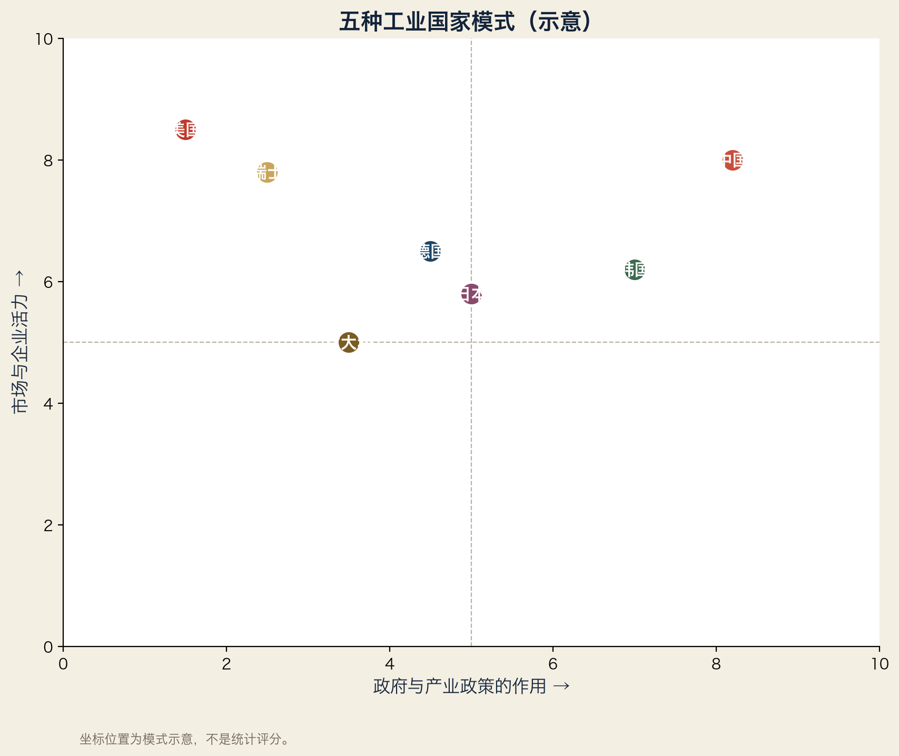

3.1 为什么要有“模式”这个概念
同样是工业强国，德国、日本、美国、中国走的路完全不同。模式不是排名，而是不同的解题方式。
3.2 七种模式
| 模式 | 资本结构 | 人才来源 | 政府角色 | 优势 | 弱点 | 代表 |
|---|---|---|---|---|---|---|
| 德国模式 | 家族/基金会+银行 | 双元制+工科大学 | 联邦制+协会协调 | 机械、隐形冠军、长期主义 | 数字化慢、人口老化 | Bosch、SEW、Siemens |
| 日本模式 | 交叉持股+财团 | 终身雇佣+企业内训 | 通产省式协调 | 精密、小型化、工艺 | 创新速度慢、市值低 | Toyota、Fanuc、Murata |
| 美国模式 | 资本市场+风投 | 移民+顶尖大学 | 政府采购+制裁 | 软件、芯片设计、AI | 制造业空心化 | Nvidia、Apple、Tesla |
| 中国模式 | 国企+民企+基金 | 工程师红利 | 产业政策+地方竞争 | 规模、速度、全链 | 高端短板、过剩 | 华为、比亚迪、汇川 |
| 韩国模式 | 财阀 | 教育内卷 | 强政府扶持 | 存储、显示、造船 | 财阀集中风险 | Samsung、Hyundai、SK |
| 瑞士模式 | 中小企业+精密 | 钟表学徒传统 | 中立+高教育 | 精密机械、制药 | 市场小 | ABB、VAT、Bühler |
| 意大利模式 | 家族中小企业 | 产业区学徒 | 弱政府+协会 | 设计、机械、品牌 | 资本化不足 | IMA、Sacmi、法拉利系 |
3.3 模式会变
德国：引以为傲的汽车模式正被电动化冲击
日本：家电与半导体的“失去”说明模式不是免死金牌
美国：再工业化（芯片法案）试图把模式拉回制造
中国：从“世界工厂”转向“定义者”，模式仍在演化
3.4 用两张轴画模式
横轴：政府作用（弱 → 强）
纵轴：市场与企业活力（低 → 高）
美国：政府弱、市场强（右上）
中国：政府强、市场也强（右上偏中，特殊）
德国：政府中、市场强（右上偏中）
日本：政府中、企业强（中）
意大利：政府弱、企业强（左上偏中）
模式的意义不是“谁更好”，而是：当环境变化时，哪种模式能先改过来。
3.5 本章练习
1. 用第七卷（你所在行业）的视角，比较中德模式
2. 找出你欣赏的模式的一条弱点
3. 假设 2035 年，哪种模式最可能成功？为什么？
词汇笔记（Vokabelnotiz）
| 中文 | Deutsch | English |
|---|---|---|
| 模式 | Modell | Model / pattern |
| 财阀 | Konglomerat | Chaebol / conglomerate |
| 交叉持股 | Überkreuzbeteiligung | Cross-shareholding |
| 再工业化 | Re-Industrialisierung | Reindustrialization |